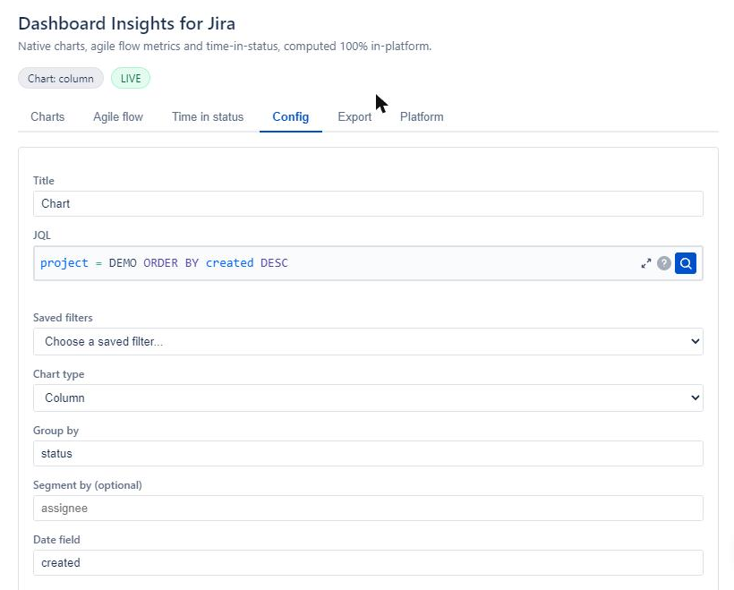
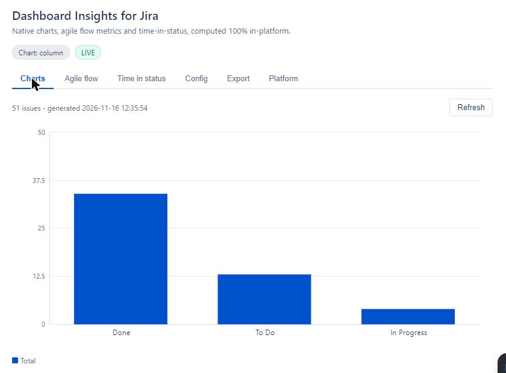
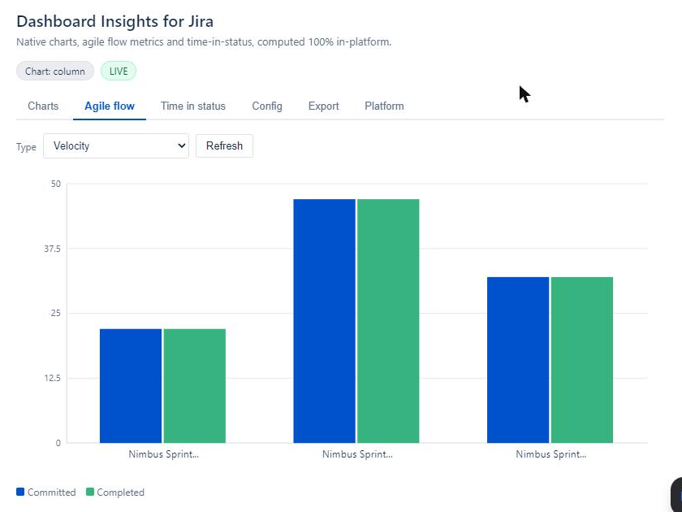
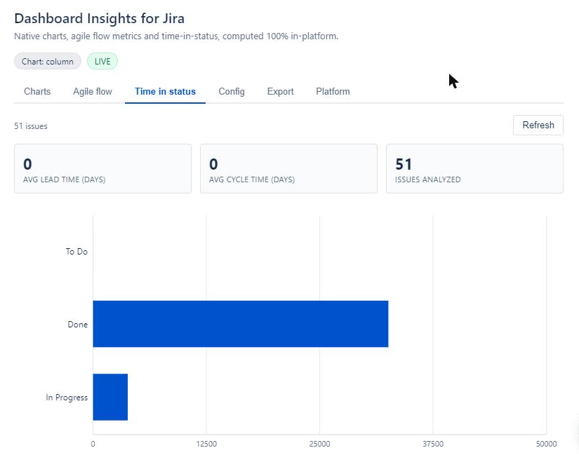
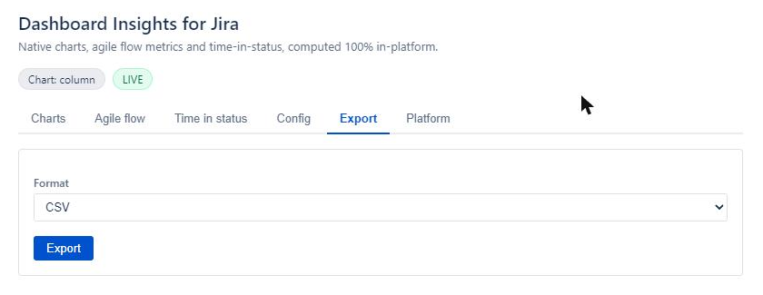

Dashboard Insights turns your Jira dashboards into a reporting hub, with native charts, agile flow metrics and time in status computed entirely inside Atlassian. Point the gadget at any JQL query using the real Jira editor, then chart your issues as column, bar, pie, line or area, grouped and segmented by any field.





Dashboard Insights is a gadget for the Jira dashboard, not a separate reporting app. You add it to a dashboard, point it at a JQL query or a saved filter, and it draws the chart from your live issues.
Charts: column, bar, pie, line and area charts from any JQL query, grouped by any field and optionally segmented by a second field. Each gadget on a dashboard keeps its own query and settings.
Agile flow: sprint velocity (committed versus completed), burndown, burnup and cumulative flow, read from the issue changelog of your own boards.
Time in status: how long work sits in each status, with changelog-accurate lead time and cycle time and a per-issue hours breakdown, so bottlenecks are easy to spot.
Everything runs on Atlassian Forge with minimal scopes and no external egress, which keeps the app eligible for the Runs on Atlassian program: your Jira data never leaves the platform. Works with company-managed and team-managed projects on Jira Cloud. Language support: English.
Build column, bar, pie, line and area charts from any JQL query, grouped and segmented by any field, as gadgets on your Jira dashboards.
Track sprint velocity (committed versus completed), burndown, burnup and cumulative flow straight from your boards, read from the issue changelog, without leaving the dashboard.
Measure how long work sits in each status, with changelog-accurate lead and cycle time and a per-issue hours breakdown.
Every chart is computed on Atlassian Forge. There is no external server, no API key and no data pipeline to explain in a security review.
Does any of my Jira data leave Atlassian?
No. Every chart, the time in status calculation and the short result cache run inside Forge on Atlassian infrastructure. The app has no external server and makes no external network calls.
Can I have several gadgets with different queries on one dashboard?
Yes. Each gadget keeps its own JQL query, chart type and settings, so one dashboard can show several charts side by side.
The chart says no issues match. What should I check?
Open the Config tab and check the JQL query. After typing a query, press Enter in the editor so it is applied, then select Save. The query must return issues you have permission to see.
Where do the agile and time in status numbers come from?
From the Jira issue changelog of the issues your query returns: sprint changes for velocity and burndown, and status changes for time in status, lead time and cycle time.
Which Jira projects does it work with?
Company-managed and team-managed projects on Jira Cloud. You only see issues you already have permission to see in Jira.
The app reads Jira data with the permissions of the person using it, and only:
Everything runs on Atlassian Forge and no data leaves Atlassian. Details in the privacy policy.
For questions, issues, or feature requests: